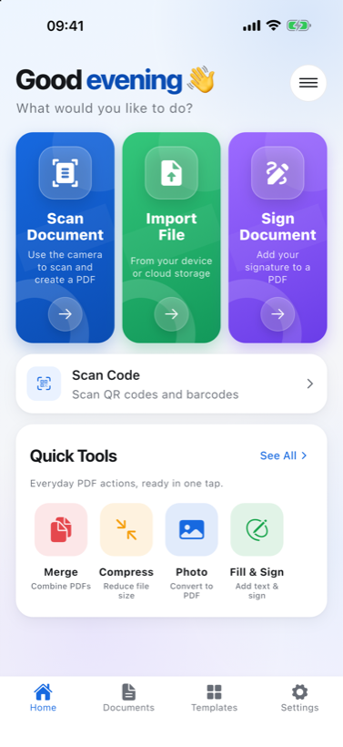
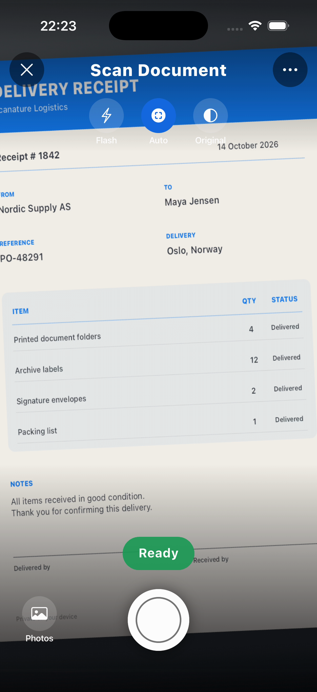
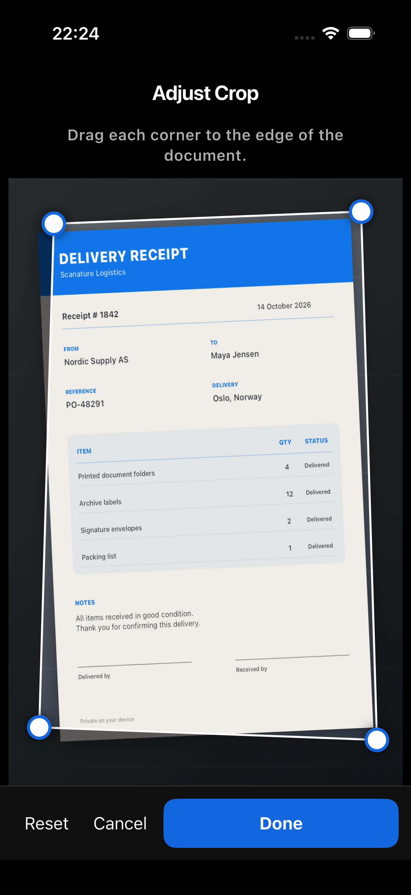
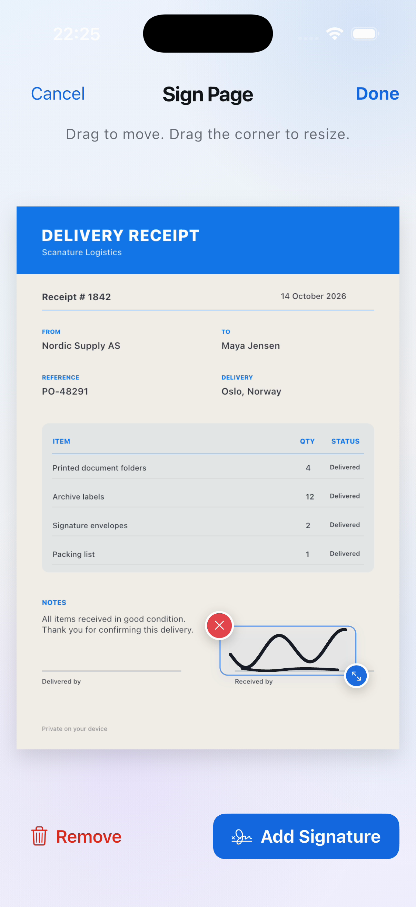
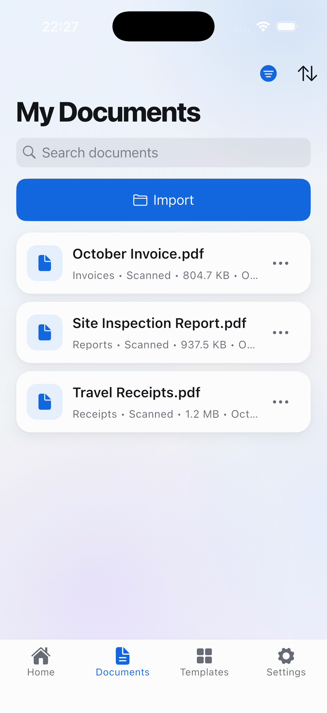

Scan and review
Follow the live guidance, capture the page, and check the corrected result.
15 seconds · Narrated · Transcript
Scanature
Scan it, fill it in, sign it, send it — on an iPhone or iPad, in the cab, on the doorstep or on site. Nothing is uploaded and nothing needs a signal.
No account. No sign-in. Works offline.

Scanature's built-in scanner finds the page while you aim, tells you to move closer or hold steady, and captures by itself the moment the shot is right.
Automatic capture, live guidance, flash, and four page filters. Add, reorder, recrop or rescan pages as you go.
Sign on the page with a finger or Apple Pencil. Your signature is saved for next time and stays sharp at any size.
Ten ready-made, fillable forms — proof of delivery, vehicle inspection, expense receipt, damage report and more.
Add text, images, drawings and highlights. Move and resize anything you place, and change it again later.
Turn English scans into text you can select and search. Read QR codes and barcodes straight from the page.
Save the PDF or share it to Mail, Messages or Files without ever opening an editor. Scan, sign, send, in one run.
A calmer way to finish the paperwork in front of you — from the first scan to the PDF you are ready to send.
Scan, crop, fill, sign, save, and share without passing your document between separate apps.
Your scans and signatures stay on the device, with no account or sign-in required.
Use clean, fillable templates for delivery, inspections, expenses, invoices, agreements, and everyday forms.
Work offline on iPhone or iPad, then send the finished PDF when it is ready.
Six short guides show the complete workflow, from scanning and signing to templates and organizing the finished PDFs.
Follow the live guidance, capture the page, and check the corrected result.
15 seconds · Narrated · Transcript
Line up the four corners, then choose a clean document finish.
14 seconds · Narrated · Transcript
Use a saved signature, place it, and make it fit the document.
12 seconds · Narrated · Transcript
Send the completed PDF, or keep it in My Documents for later.
13 seconds · Narrated · Transcript
Browse clean, fillable forms for everyday and business paperwork.
14 seconds · Narrated · Transcript
Filter and sort finished documents in a private on-device library.
14 seconds · Narrated · Transcript
Current screens from the real app, showing the complete path from capture to a corrected, signed, organized document.




Four steps, one screen, under a minute.
Scanature finds the page while you aim and captures by itself the moment the shot is right. Or start from a form that is already laid out, or import a PDF you were sent.
Add pages, drag them into order, pull the corners to redo a crop, or rescan the one that came out badly.
Tap a field to type, tap a signature box to sign. Your signature is saved for next time and can be moved or removed until you are happy with it.
Share straight to Mail, Messages or Files without opening an editor, or keep it in the library.
There is no account and no sign-in. Scans, signatures and your profile are written to the app's own storage and sent nowhere. Scanning, editing, signing and text recognition all run on the device, which is why none of it needs a connection.
That is not a promise we ask you to take on trust: the App Store privacy label for Scanature reads Data Not Collected, and Apple holds us to it.
The app and the forms it provides, with Arabic and Persian laid out right to left.
The support page has the common answers and a box to describe a problem in. Privacy enquiries go to privacy@scanature.com.
Go to support